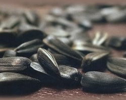
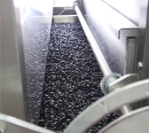
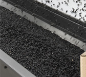
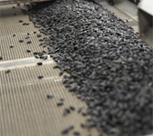
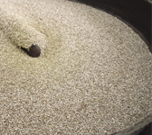
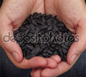
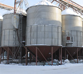

Чем хороша наша семечка?
В наше время семечки подсолнечника очень популярны, а об их пользе говорят многие специалисты по питанию и оздоровлению. В них содержатся легкоусвояемые жиры, в том числе ненасыщенные жирные кислоты, много ценного белка, лецитин, углеводы, сахара, клетчатка; минералы – железо, фосфор, натрий, магний, кальций, калий, цинк, йод, селен; витамины – D, E, F, РР, группы В, каротин. Семечки очень калорийны – в 100 г содержится до 560 ккал, однако для здорового питания они необходимы: взрослому человеку достаточно съесть всего 50 г очищенных семечек, чтобы получить почти полную дневную норму витамина Е и полиненасыщенных жирных кислот, которые к тому же уравновешивают количество холестерина в крови. К тому же семечки снижают аппетит, если добавлять их в блюда или есть перед обедом – поэтому они входят в некоторые диеты для похудения. Растительный белок и жир, в больших количествах содержащиеся в семечках, оказывают благоприятное воздействие на нашу кожу, волосы, ногти, слизистые оболочки. В белках семечек содержатся незаменимые аминокислоты, необходимые нашему организму для нормальной деятельности и существования. Размолотые семечки можно использовать, как скраб для тела: такой скраб не только отшелушивает отмершие клетки, но и увлажняет, питает и омолаживает кожу. Если ежедневно съедать натощак по горсти семечек, волосы станут крепкими и блестящими – это сделает легкоусвояемый цинк, которым они очень богаты.
При регулярном употреблении семечек приходит в норму кислотно-щелочной баланс организма.
Все полезные вещества, содержащиеся в семечках, сохраняются в них при длительном хранении, тогда как в других продуктах они быстро разрушаются. Ведь семечки находятся в удивительно экономичных и герметичных контейнерах, созданных самой природой – в скорлупе, которая надёжно защищает их от окисления. Мы часто слышим, что в семечках много магния – в 6 раз больше, чем в ржаном хлебе; кальция столько же, сколько в натуральном йогурте; много витамина Е, способствующего улучшению репродуктивной функции мужчин и женщин.
Стоит почаще напоминать себе о полезных свойствах семечек подсолнечника, так как в повседневной суете мы забываем об этом, и стараемся перекусывать тем, что попадётся под руку.
Мы с радостью примем Вас в свою команду!
Открытые вакансии:
- Инженер-технолог. Барнаул.
- Бухгалтер. Барнаул.
- Начальник участка. Барнаул.
- Слесарь КИПИА. Барнаул.
- Супервайзер. Новосибирск.
- Супервайзер. Чита.
Из жизни компании:
- 
- 

- 
- 
- 
- 